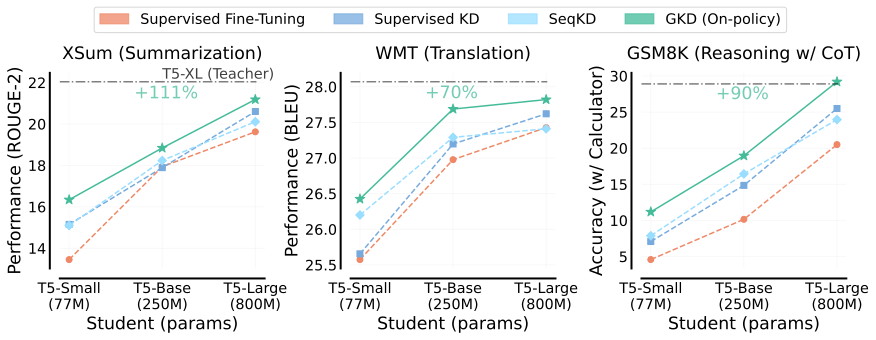
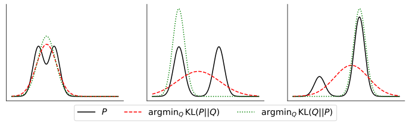

Think of learning to drive. Supervised KD is watching the instructor drive: you only see the road from a perfect lane position. On-policy distillation puts you at the wheel, and the instructor says what they would do from wherever you actually are, including the spots only your own mistakes lead to.
운전 배우기를 떠올리면 쉽다. 지도 학습 KD는 강사가 운전하는 걸 옆에서 보는 것이라, 늘 완벽한 차선 위치에서 본 길만 익힌다. 온폴리시 증류는 내가 직접 운전대를 잡고, 강사가 "지금 네 위치라면 나는 이렇게 하겠다"고 알려 준다. 내 실수로만 가게 되는 자리까지 포함해서.
The result in one figure한 장으로 보는 결과
Training on the student's own outputs wins at every size. The green on-policy line sits above supervised KD and SeqKD (training on teacher-written outputs) for all three students on all three tasks.
학생 자신의 출력으로 학습하면 모든 크기에서 이긴다. 초록색 온폴리시 선이 세 과제, 세 학생 크기 모두에서 지도 학습 KD와 SeqKD(교사가 쓴 출력으로 학습)보다 위에 있다.

- Start from a fine-tuned student.미세조정된 학생에서 시작한다.As in RLHF, the student is first SFT'd (supervised fine-tuned) so its outputs are good enough for the teacher to grade.RLHF처럼, 학생을 먼저 SFT(지도 미세조정)해 교사가 채점할 만한 출력을 쓰게 한다.
- Pick the data source each step.매 스텝 데이터 출처를 고른다.With probability λ the student samples outputs at temperature 1; otherwise use a batch of gold or teacher outputs. λ = 1 is fully on-policy.확률 λ로 학생이 온도 1로 출력을 샘플링하고, 아니면 정답·교사 출력 묶음을 쓴다. λ = 1이면 완전 온폴리시.
- Match the teacher token by token.토큰마다 교사에 맞춘다.The student minimizes forward KL, reverse KL or JSD(β), a bounded blend of the two, averaged over tokens. No gradient flows through sampling.학생은 forward KL·reverse KL·JSD(β)(둘을 섞은 유계 발산) 중 하나를 토큰 평균으로 줄인다. 샘플링 과정으로는 기울기를 흘리지 않는다.
Key idea: train where the student goes핵심: 학생이 가는 곳에서 학습한다
The student's own outputs are the better training set. Same loss, only the data changes: going from fixed data (λ = 0) to self-generated data (λ = 1) nearly doubles the GSM8K gain and triples the WMT one.
학생 자신의 출력이 더 좋은 학습 데이터다. 손실은 같고 데이터만 바꾼다: 고정 데이터(λ = 0)를 자기 생성 데이터(λ = 1)로 바꾸면 GSM8K 이득은 거의 2배, WMT는 3배가 된다.
Which divergence? It depends어떤 발산? 과제에 따라 다르다
Forward KL covers every teacher mode; reverse KL commits to one. A small student can't do both, so covering spreads probability onto poor tokens, while committing trades diversity for quality.
forward KL은 교사의 봉우리를 모두 덮고, reverse KL은 하나를 고른다. 작은 학생은 둘 다 못 하니, 덮으려 하면 나쁜 토큰에 확률이 흩어지고, 고르면 다양성을 내주고 품질을 얻는다.

No single winner. Mode-seeking losses help when sampling at temperature 1 and reverse KL wins instruction tuning, yet forward KL is best on GSM8K.
하나의 정답은 없다. 온도 1로 샘플링할 땐 봉우리 하나를 좇는 손실이 낫고 instruction tuning에선 reverse KL이 이기지만, GSM8K에선 forward KL이 가장 좋다.
| Setting설정 | Fwd KL | JSD(0.1) | JSD(0.5) | JSD(0.9) | Rev KL |
|---|---|---|---|---|---|
| XSum · small · ROUGE-2 (temp. 1) | 13.2 | 15.1 | 15.5 | 15.2 | 14.5 |
| XSum · small · ROUGE-2 (greedy) | 16.4 | 16.6 | 16.6 | 16.3 | 15.6 |
| WMT · small · ΔBLEU | 0.55 | 0.85 | 0.77 | 0.79 | 0.46 |
| GSM8K · base · Δacc | 8.8 | 7.6 | 7.0 | 6.7 | 8.0 |
| FLAN → MMLU · base · Δacc | −0.5* | – | – | – | +2.0* |
If a distilled or compressed model matches the teacher on benchmarks but drifts when it generates, fix the data before the loss: grade the student's own rollouts with teacher logits. The same loss drops into RLHF by moving the KL anchor from the initial policy to the teacher.증류·압축한 모델이 벤치마크는 맞추는데 생성할 때 어긋난다면, 손실보다 데이터를 먼저 고쳐라: 학생이 직접 만든 출력을 교사 logit으로 채점하게. 같은 손실은 RLHF의 KL 기준점을 초기 정책에서 교사로 옮기기만 하면 그대로 끼워 넣을 수 있다.
Everything is T5 (teacher ~3B, students ≤ 800M) scored by ROUGE, BLEU or accuracy; the paper never measures how close the student's output distribution gets to the teacher's. Sampling from the student makes training about 1.8–2.2× costlier than fixed data, and the divergence must be tuned per task.모든 실험이 T5(교사 ~3B, 학생 ≤ 800M)와 ROUGE·BLEU·정확도뿐이고, 학생 출력 분포가 교사에 얼마나 가까워졌는지는 재지 않는다. 학생 샘플링 때문에 고정 데이터보다 학습 비용이 약 1.8–2.2배 들고, 발산은 과제마다 따로 골라야 한다.